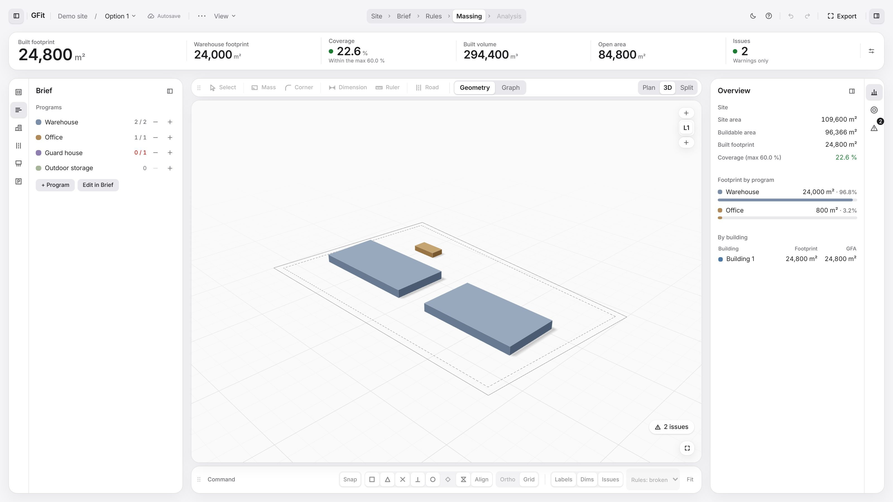
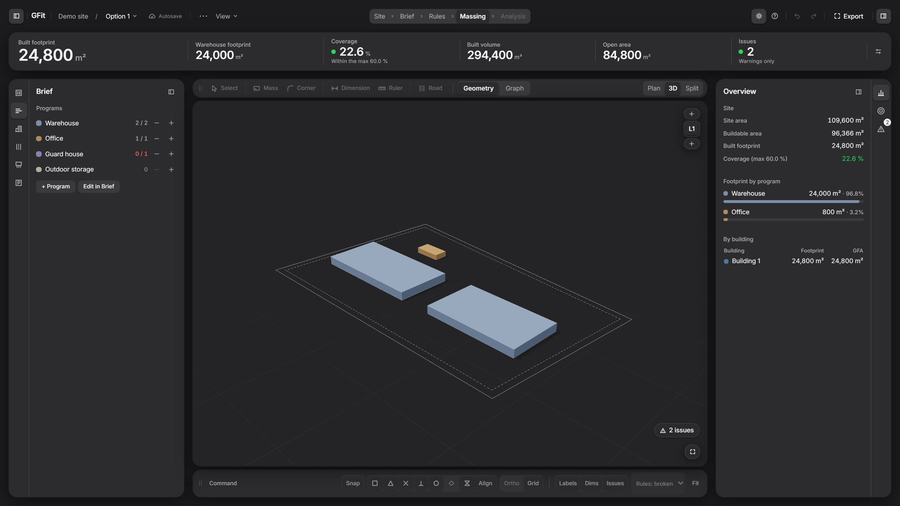
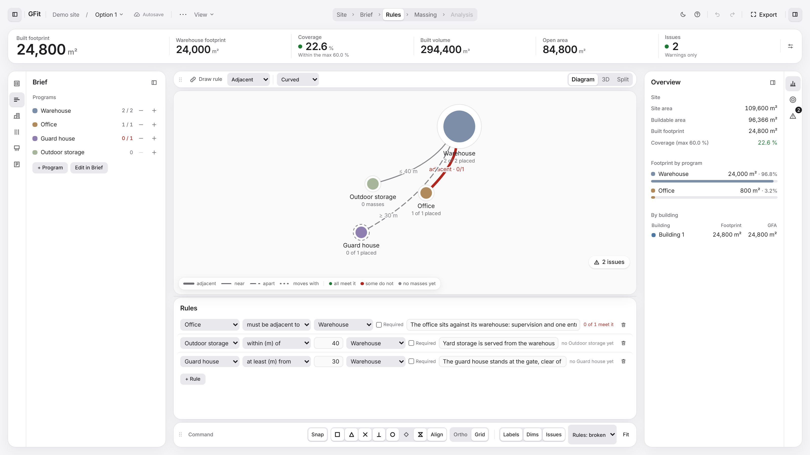
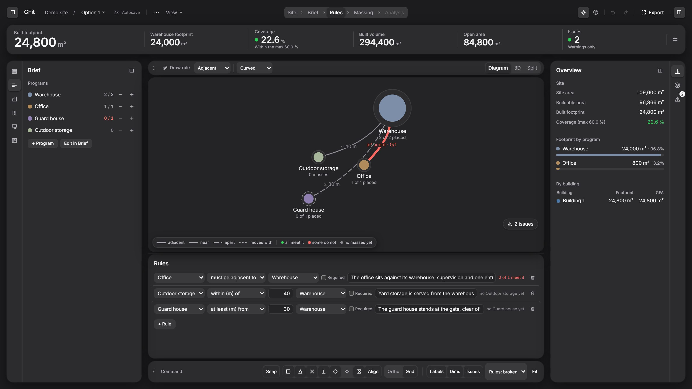
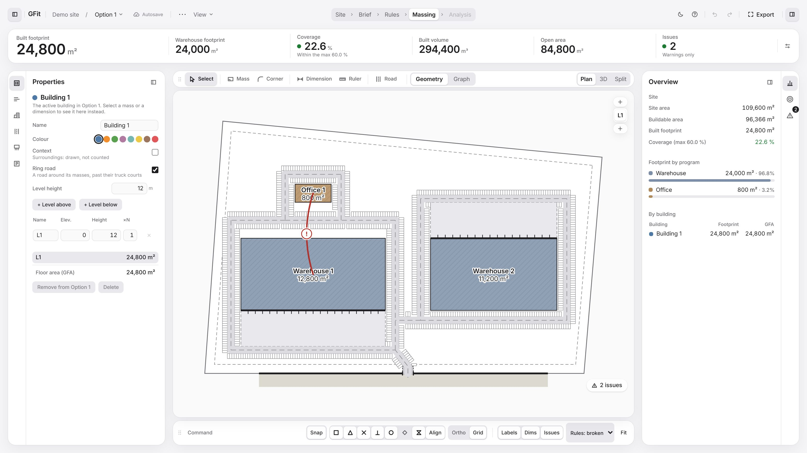
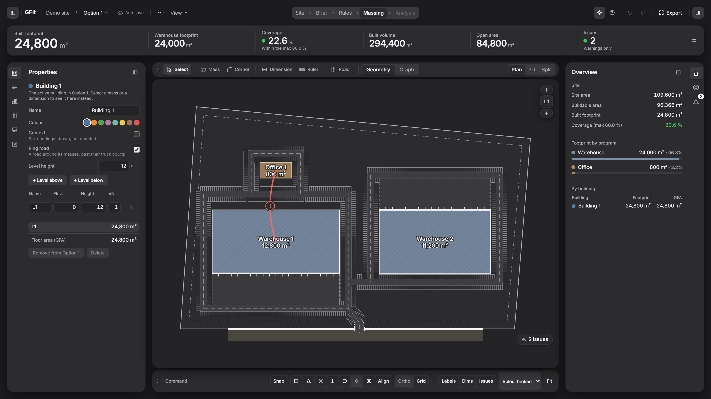

Presentation 01 · Oct 21, 2026 · GenslerPresentación 01 · 21 oct 2026 · Gensler01
From test fits to information models: what the tool does today, and what comes next.De test fits a modelos de información: lo que hace la herramienta hoy, y lo que sigue.
The cost of a test fitEl costo de un test fit01
A test fit takes a day in AutoCAD.1Un test fit toma un día en AutoCAD.1
1 · The author's estimate for one test fit drawn by hand. 2 · Measured in the baseline study (last slide), not guessed.1 · Estimación del autor para un test fit dibujado a mano. 2 · Se mide en el estudio de línea base (última slide), no se supone.
LineageLinaje01
Each tool built once is reused to build a better one.Cada herramienta que se hace una vez se reutiliza para construir una mejor.
- Tool 1Herramienta 1
Plaza-Practiko
The first test fit.El primer test fit.
- →
- Tool 2Herramienta 2
MELI
A layout generator.Un generador de layouts.
- →
- TodayHoy
One core, many building types.Un núcleo, muchas tipologías.
What it doesQué hace01


Site → Brief → Rules → Massing.Sitio → Brief → Reglas → Masas.
Every step edits one project: change the brief and everything downstream follows.Cada paso edita un solo proyecto: cambia el brief y todo lo que sigue se actualiza.
Built since Oct 13Construida desde el 13 de octubre01
Six days, one phase at a time.Seis días, una fase a la vez.
Oct 1313 oct
Scaffold, data contractBase, contrato de datos
Oct 1414 oct
Massing, the UI, 3DMasas, la interfaz, 3D
Oct 1515 oct
Options, brief, design rulesOpciones, brief, reglas de diseño
Oct 15–1615–16 oct
Exterior circulationCirculación exterior
Oct 1818 oct
Stress pass, research planPrueba de estrés, plan de investigación
101 commits · 751 automated tests passing (Oct 18).101 commits · 751 tests automáticos pasando (18 oct).
In the app · RulesEn la app · Reglas01


Design rules move the masses.Las reglas de diseño mueven las masas.
▶ Solve places what the brief asks for and arranges it; a broken rule shows in red.▶ Solve coloca lo que pide el brief y lo acomoda; una regla rota se ve en rojo.
In the app · MassingEn la app · Masas01


Circulation follows the masses.La circulación sigue a las masas.
Gates, truck courts, docks, roads and parking, derived from the buildings.Accesos, patios de maniobras, andenes, vialidades y estacionamiento, derivados de los edificios.
Two kinds of rulesDos tipos de reglas01
What we want, and what we got.Lo que queremos, y lo que obtuvimos.
- Design rules · doneReglas de diseño · hechoWhat we wantLo que queremosoffice next to warehouseoficina junto a la nave
- The planEl planMasses, roads, docksMasas, vialidades, andenesone project, every stepun proyecto, cada paso
- Code rules · phase 6Reglas de normativa · fase 6What we gotLo que obtuvimosegress, fire access, road widthsevacuación, bomberos, anchos de vialidad
Scope for now: up to the rule-checked layout.Alcance por ahora: hasta el layout revisado por reglas.
RoadmapRoadmap01
Where it stands.Dónde está.
- Site → Brief → Rules → MassingSitio → Brief → Reglas → Masas
- Buildings, levels, optionsEdificios, niveles, opciones
- Exterior circulationCirculación exterior
- 3D, export to Rhino3D, exportar a Rhino
- Site from DXFSitio desde DXF
- Decision logBitácora de decisiones
- Analysis: code rulesAnalysis: normativa
- Optimization, MCPOptimización, MCP
- Versions, portfolioVersiones, portafolio
- Sheets, .pptx, IFCLáminas, .pptx, IFC
- Offices (CAF)Oficinas (CAF)
- Team library on AzureBiblioteca en Azure
What comes next · measuringLo que sigue · medir01
Next: measure what the app saves.Sigue: medir lo que la app ahorra.
- 01InterviewsEntrevistas3–5 roles, their own steps3–5 roles, sus propios pasos
- 02BaselineLínea base1–2 real Gensler projects1–2 proyectos reales de Gensler
- 03Same task in the appLa misma tarea en la apphands · passes · timemanos · pasadas · tiempo
The app is also the case study of my MaCAD thesis (IAAC); the research has its own deck on this site.La app es también el caso de estudio de mi tesis de MaCAD (IAAC); la investigación tiene su propio deck en este sitio.